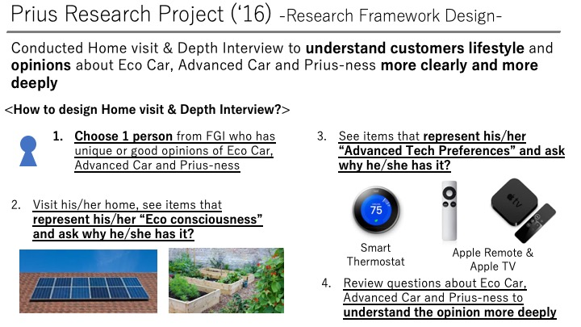

Introduction
This project was a product evaluation research in 2016 when a new Prius was launched. I was assigned the project just after moving to the Market Research group in Toyota.
In addition to the product-centered research which was originally requested by client departments, I conducted the market-centered research to understand how the market changed from when Prius was introduced for the first time, and grasp a gap between the current market and Toyota about High-tech car and Environmental-friendly car.
The purpose of this research was to consider the result into next model's concept.
Background ~ Inplementation ~ Result
